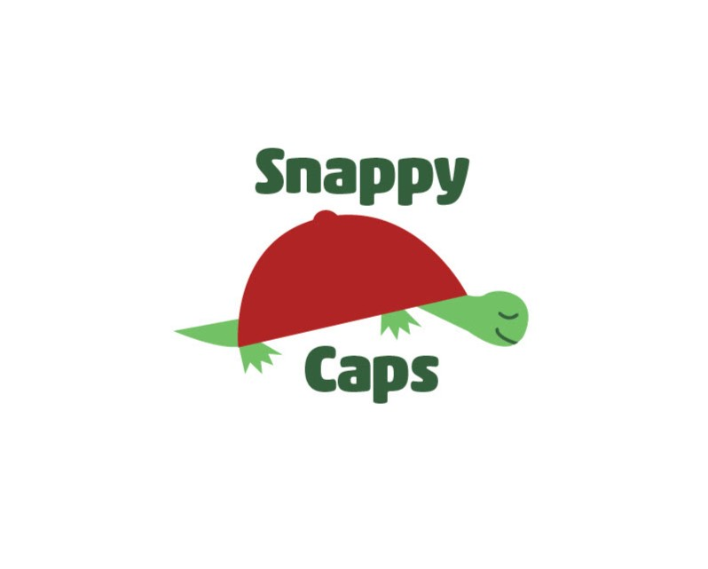
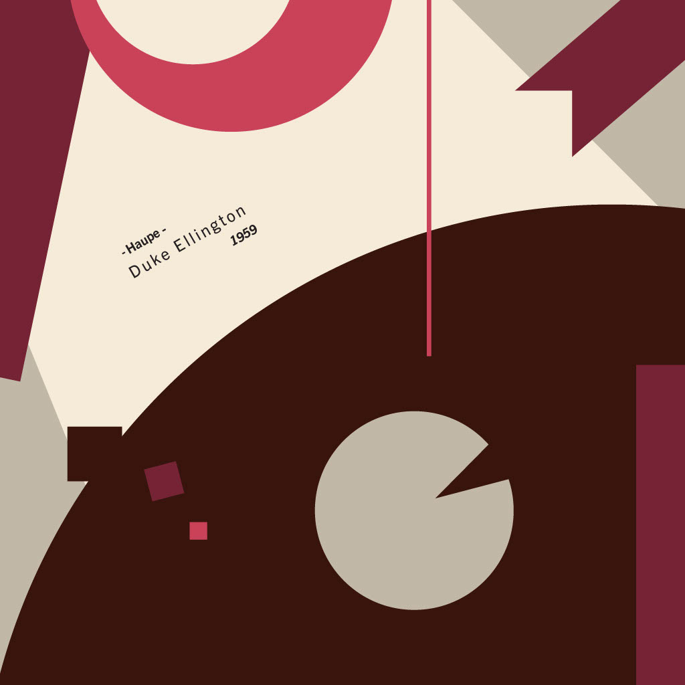

About Me
Hello! I am Alayna Hart. I am a student at Brigham Young
Univerity-Idaho majoring in Web Design and Development and
minoring in Computer Programming. I love programming, designing,
and developing. My hope for my personal website is that you will
see my passion for web design as well as the things I have learned
in my courses so far. Take a look around and message me with any
questions or comments. I look forward to meeting you!
Graphic Design Projects
Logo Project
For this project, I created a unique logo for a fictional
baseball cap company featuring a turtle mascot. The project
guidelines required the use of a maximum of three colors and
the incorporation of shapes, rather than strokes.

Album Project
This album cover was created for Haupe by Duke Ellington
(1959) as part of an assignment to design a cover for an
instrumental song produced before the 1960s. The project
specifications allowed for only five colors and required the
use of basic shapes (triangle, circle, rectangle, and line),
along with the song title, artist's name, and year of release.

Programming Projects
Portfolio Practice Website
In my first web development class, I built a practice
portfolio website to showcase my academic journey. The site
featured three distinct pages: the first describing html and
css principles, one highlighting the courses I had completed,
and another showcasing my projects. Throughout the process, I
applied fundamental web design principles that I had learned.
Click Here to View Website
My Favorite Movies Website
In my second web development class, I designed a two-page
website featuring my favorite movies and a movie trivia game.
The first page includes a list of my favorite films, each
accompanied by a title, description, and image. The page also
allows users to search and sort the movies dynamically. The
second page offers a trivia game where users can test their
knowledge by answering questions related to the featured
films.
Click Here to View Website